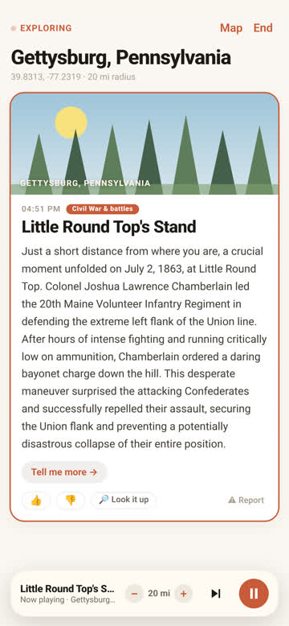
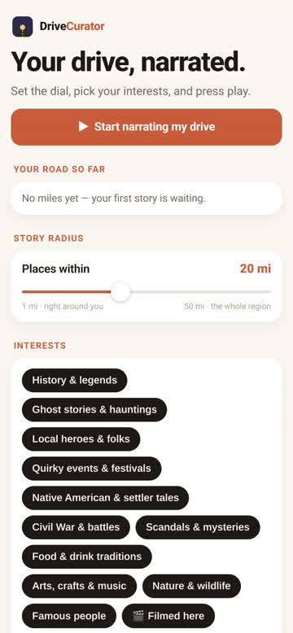
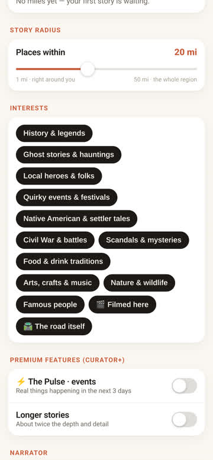
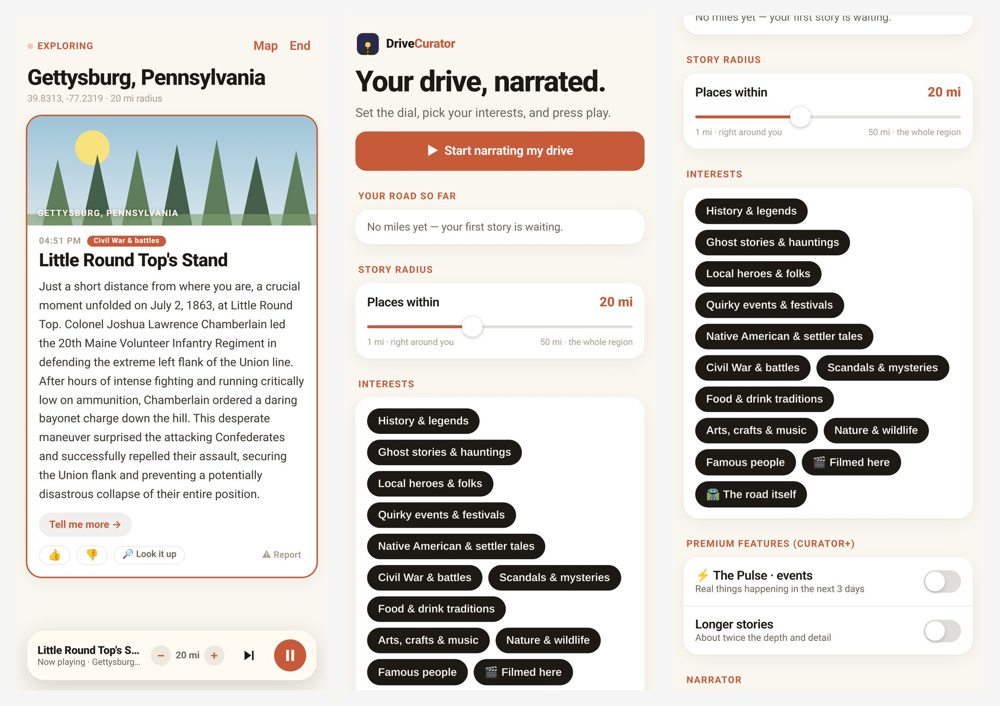

Your drive, narrated.
Drive Curator makes your own personal podcast about the area around you.
What the app does
You set your radius and pick the things you care about. Then a soothing voice narrates your drive with historical facts, local events and oddities from the places you are passing.
It is like a podcast made just for the road you are on, and it changes as you go.
A look inside




Running a park or campground?
We offer a Story Pack for independent parks. Read about the Park Story Pack.